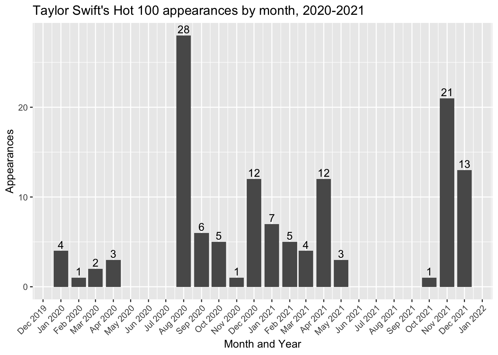

Chapter 12 Grouping by dates
It is not uncommon in data journalism to count or sum records by year based on a date within your data. Or even by other date parts like month or week. There are some really nifty features within the lubridate package that make this pretty easy.
We’ll run through some of those scenarios here using the Billboard Hot 100 data we used in Chapters 3 & 4. If you want to follow along, you can create a new notebook in your Billboard project. Or you can just use this for reference.
12.1 Setting up
We need to set up our notebook with libraries and data before we can talk specifics. We need to load both the tidyverse and lubridate libraries. Lubridate is installed with the tidyverse package, but you have to load it separately.
library(tidyverse)
library(lubridate)And we need our cleaned Billboard Hot 100 data.
hot100 <- read_rds("data-processed/01-hot100.rds")
hot100 |> glimpse()## Rows: 336,100
## Columns: 7
## $ chart_date <date> 1958-08-04, 1958-08-04, 1958-08-04, 1958-08-04, 1958-08…
## $ current_rank <dbl> 1, 2, 3, 4, 5, 6, 7, 8, 9, 10, 11, 12, 13, 14, 15, 16, 1…
## $ title <chr> "Poor Little Fool", "Patricia", "Splish Splash", "Hard H…
## $ performer <chr> "Ricky Nelson", "Perez Prado And His Orchestra", "Bobby …
## $ previous_rank <dbl> NA, NA, NA, NA, NA, NA, NA, NA, NA, NA, NA, NA, NA, NA, …
## $ peak_rank <dbl> 1, 2, 3, 4, 5, 6, 7, 8, 9, 10, 11, 12, 13, 14, 15, 16, 1…
## $ wks_on_chart <dbl> 1, 1, 1, 1, 1, 1, 1, 1, 1, 1, 1, 1, 1, 1, 1, 1, 1, 1, 1,…12.2 Plucking date parts
If you look at the lubridate cheetsheet under “GET AND SET DATE COMPONENTS” you’ll see functions to pluck out parts of a date, like year().
If we have a date, like perhaps Taylor Swift’s birthday, we can pluck the year from it.
year("1989-12-13")## [1] 198912.3 Grouping by a date part on the fly
Let’s show how this might be useful through an example question:
Which performer has the most appearances on the chart in a given year?
The logic works like this:
- Group all the records by
performerAND the year of thechart_date - Summarize and count the rows
hot100 |>
group_by(
year(chart_date),
performer
) |>
summarize(appearances = n()) |>
arrange(desc(appearances))## `summarise()` has grouped output by 'year(chart_date)'. You can override using
## the `.groups` argument.## # A tibble: 22,953 × 3
## # Groups: year(chart_date) [65]
## `year(chart_date)` performer appearances
## <dbl> <chr> <int>
## 1 1964 The Beatles 214
## 2 2021 Olivia Rodrigo 172
## 3 2018 Drake 168
## 4 2022 Bad Bunny 148
## 5 2019 Billie Eilish 145
## 6 2016 Drake 134
## 7 2015 The Weeknd 126
## 8 2005 Kelly Clarkson 124
## 9 2015 Drake 124
## 10 2009 Taylor Swift 122
## # … with 22,943 more rowsWe can see here that The Beatles had the most hits in 1964 with 214 (at least as of this writing).
But notice how the year column name is kinda shite? We would not be able to easily reference that variable later, so we should rename that AS we make the group:
hot100 |>
group_by(
yr = year(chart_date), # added "yr = " here
performer
) |>
summarize(appearances = n()) |>
arrange(desc(appearances))## `summarise()` has grouped output by 'yr'. You can override using the `.groups`
## argument.## # A tibble: 22,953 × 3
## # Groups: yr [65]
## yr performer appearances
## <dbl> <chr> <int>
## 1 1964 The Beatles 214
## 2 2021 Olivia Rodrigo 172
## 3 2018 Drake 168
## 4 2022 Bad Bunny 148
## 5 2019 Billie Eilish 145
## 6 2016 Drake 134
## 7 2015 The Weeknd 126
## 8 2005 Kelly Clarkson 124
## 9 2015 Drake 124
## 10 2009 Taylor Swift 122
## # … with 22,943 more rowsIt is a good practice to rename any grouping variable made from a function like that. FWIW, it would’ve worked if I called the new column year, but I named it yr so I’m less likely to confuse it with the function year(). It’s a personal preference what to name the new column.
12.4 Making reusable date parts
If you think you’ll use a date parts more than once, then it makes sense to create a new columns and save them. You might make several date parts, but we’ll start with only one.
I usually go back to my cleaning notebook to add these once I recognize I need them, and then rerun everything.
To make this easier to show, I’ve created a random sample of data with only the chart_date and title columns. Here is our sample:
# you wouldn't normally do this!!!!
hot100_sample <- hot100 |> slice_sample(n = 6) |> select(chart_date, title)
hot100_sample## # A tibble: 6 × 2
## chart_date title
## <date> <chr>
## 1 1986-08-02 Nasty
## 2 1980-02-09 Holdin' On For Dear Love
## 3 1971-07-17 Puppet Man/Resurrection Shuffle
## 4 2010-01-30 White Liar
## 5 1970-03-28 Vehicle
## 6 1994-12-17 Living In Danger12.4.1 Let’s make a year
Here’s how we do it:
- We use mutate to create a new column.
- We name the new column
yr. - We set the value of
yrto equal theyear()ofchart_date.
hot100_sample |>
mutate(
yr = year(chart_date)
)## # A tibble: 6 × 3
## chart_date title yr
## <date> <chr> <dbl>
## 1 1986-08-02 Nasty 1986
## 2 1980-02-09 Holdin' On For Dear Love 1980
## 3 1971-07-17 Puppet Man/Resurrection Shuffle 1971
## 4 2010-01-30 White Liar 2010
## 5 1970-03-28 Vehicle 1970
## 6 1994-12-17 Living In Danger 199412.4.2 The magical month
We can also pluck out the month of the date, which is pretty useful if you want to measure seasonality within a year, like hot days of summer, etc. The default month() function pulls the month as a number.
hot100_sample |>
mutate(
mo = month(chart_date)
)## # A tibble: 6 × 3
## chart_date title mo
## <date> <chr> <dbl>
## 1 1986-08-02 Nasty 8
## 2 1980-02-09 Holdin' On For Dear Love 2
## 3 1971-07-17 Puppet Man/Resurrection Shuffle 7
## 4 2010-01-30 White Liar 1
## 5 1970-03-28 Vehicle 3
## 6 1994-12-17 Living In Danger 12But there are some options within month() to give us month NAMES that are ordered as factors instead of alphabetical.
hot100_sample |>
mutate(
mo_label = month(chart_date, label = TRUE),
mo_long = month(chart_date, label = TRUE, abbr = FALSE)
) |>
arrange(mo_label)## # A tibble: 6 × 4
## chart_date title mo_label mo_long
## <date> <chr> <ord> <ord>
## 1 2010-01-30 White Liar Jan January
## 2 1980-02-09 Holdin' On For Dear Love Feb February
## 3 1970-03-28 Vehicle Mar March
## 4 1971-07-17 Puppet Man/Resurrection Shuffle Jul July
## 5 1986-08-02 Nasty Aug August
## 6 1994-12-17 Living In Danger Dec DecemberNote the datatype <ord> under the column mo_label and mo_long. That means this is an “ordered factor” and that when arranged by those labels it will list in MONTH order instead of alphabetical order, which is quite useful.
12.4.3 Floor dates
Sometimes you want to count the number of records within a month and year, like all the songs in January 2000, then February 2000, etc. One way to do that is to create a floor_date, which gives you the “lowest” date within a certain unit like year or month. It’s easiest to show with our sample data:
hot100_sample |>
mutate(
fl_month = floor_date(chart_date, unit = "month"),
fl_year = floor_date(chart_date, unit = "year")
)## # A tibble: 6 × 4
## chart_date title fl_month fl_year
## <date> <chr> <date> <date>
## 1 1986-08-02 Nasty 1986-08-01 1986-01-01
## 2 1980-02-09 Holdin' On For Dear Love 1980-02-01 1980-01-01
## 3 1971-07-17 Puppet Man/Resurrection Shuffle 1971-07-01 1971-01-01
## 4 2010-01-30 White Liar 2010-01-01 2010-01-01
## 5 1970-03-28 Vehicle 1970-03-01 1970-01-01
## 6 1994-12-17 Living In Danger 1994-12-01 1994-01-01You can see the resulting new columns are real dates, but they are normalized:
- The
fl_monthgives you the first day of the month for thatchart_date. - The
fl_yeargives you the first day of the year for thatchart_date.
Let’s put this to use with an example. I’ll create a fl_month on the fly to find Taylor Swift appearances by month for 2020-2021. I’ll also do the year() on the fly in my filter.
swift_month <- hot100 |>
filter(
performer == "Taylor Swift",
year(chart_date) %in% 2020:2021
) |>
group_by(
fl_month = floor_date(chart_date, unit = "month")
) |>
summarize(appearances = n())
swift_month## # A tibble: 17 × 2
## fl_month appearances
## <date> <int>
## 1 2020-01-01 4
## 2 2020-02-01 1
## 3 2020-03-01 2
## 4 2020-04-01 3
## 5 2020-08-01 28
## 6 2020-09-01 6
## 7 2020-10-01 5
## 8 2020-11-01 1
## 9 2020-12-01 12
## 10 2021-01-01 7
## 11 2021-02-01 5
## 12 2021-03-01 4
## 13 2021-04-01 12
## 14 2021-05-01 3
## 15 2021-10-01 1
## 16 2021-11-01 21
## 17 2021-12-01 13And chart it:
swift_month |>
ggplot(aes(x = fl_month, y = appearances)) +
geom_col() +
geom_text(aes(label = appearances), vjust = -.3) +
scale_x_date(date_labels="%b %Y",date_breaks ="1 month") +
guides(x = guide_axis(angle = 45)) +
labs(
x = "Month and Year",
y = "Hot 100 appearances",
title = "Taylor Swift's Billboard Hot 100 appearances by month, 2020-2021"
)
That tall bar with 28 appearances was right after “Folklore” was released in July 2020. There was another spike after “Evermore” was released in December 2020. We’ll see what happened with “Midnights” once I update the data.